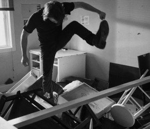

Maudite Poutine
Shambles

Karl LemieuxCA 2016 – 16mm on HD
93 min – Fench
B: Karl Lemieux, Marie-Douce
St-Jacques – DOP: Mathieu Laverdière
E: Marc Boucrot – M: David Bryant, Thierry Amar, Kevin Doria
P: Sylvain Corbeil / Metafilms
D: Stray Dogs – With Jean-Simon Leduc, Martin Dubreuil, Francis
La Haye
27-year-old
musician Vincent is targeted by the mob after stealing
drugs and goes back to his rural hometown. There he reconnects
with
his older, tormented brother Michel, trying to lead a normal life
by
playing in a hardcore band. A spiral of violence will catch both
brothers.
Shot on 16mm, SHAMBLES is a loud, almost wordless tribute to punk
energy where it always comes from — the working class, boredom,
urgency. Its hypnotic intensity is reminiscent of Philippe
Grandrieux’s
cinema. Stroboscopic effects, distorted shots, hyper-contrast
blackand-white
and music, of course, translating day-to-day angst into
some raw nightmare. (IFFR)
saturday 7 oct 8.30 p.m. werkstattkino
Karl Lemieux * 1980 in Kingsey Falls (Québec). An electric presence on Montréal’s experimental film scene, Karl Lemieux has been composing artistically adventurous time-based media since the late-90s. In 2006, Lemieux began an ongoing series of performances with the musician Radwan Moumneh (Jerusalem In My Heart) that brought Lemieux’s cameraless filmmaking techniques into the live arena. Orchestrating an assortment of hand-processed 16mm film loops through a suite of aged Eikis, Lemieux bleaches and paints filmstrips seconds before they hit the gate. He is co-founder with Daïchi Saïto of Double Negative.
Films Motion of Light 2004 – Western 2016 (11. UX) – Sunburn 2006 (11. UX) – Mamori 2010